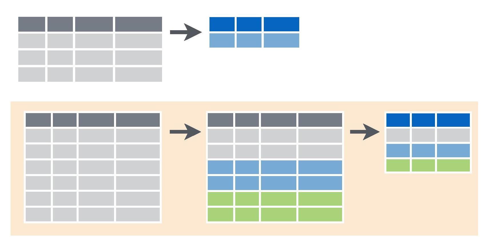

Summarising data
Summarising our data is often the first step in data exploration and needed to understanding patterns in the magnitude and variability of our measurements.

We will use the package dplyr which has many convenient functions for summarising data, so let’s start by loading the package.
library(dplyr)As with the help page on Subsetting data, we will use a data set where bats were sampled across regrowth forest in south-eastern Australia that had been thinned to reduce the density of trees. Download the data set, Bats_data.csv, and import into R.
Bats <- read.csv(file="Bats_data.csv", header=T, stringsAsFactors=F)Summarising data with dplyr
Obtaining summary measures from a single variable
We can use the function summarise with a range of built-in summary functions from R to obtain summary statistics from our data.
For example, to the mean activity of bats across all nightly measurements in the study, I would use the >mean summary function within the summarise function as follows, specifying the data frame (Bats), the variable I want to get the mean of (Activity) and a name for the new variable (Mean.Activity):
summarise(Bats, Mean.Activity=mean(Activity))## Mean.Activity
## 1 316.0405We can add as many other measurements to this as we like, including a wide range of summary functions (described with #).
summarise(Bats, mean.activity=mean(Activity), # mean
min.Activity=min(Activity), # minimum
max.Activity=max(Activity), # maximum
med.Activity=median(Activity), # median
sd.Activity=sd(Activity), # standard deviation
var.Activity=var(Activity), # variance
n.Activity=n(), # sample size
se.Activity=sd.Activity/sqrt(n.Activity), # standard error
IQR.Activity=IQR(Activity)) # interquartile range## mean.activity min.Activity max.Activity med.Activity sd.Activity var.Activity
## 1 316.0405 9 1070 282 203.1081 41252.89
## n.Activity se.Activity IQR.Activity
## 1 173 15.44202 292If we are looking at factors, especially if they are ordered in some way, we may find some of the other dplyr summary functions useful. For example:
summarise(Bats, first.site=first(Site), # first value in Site variable
last.Site=last(Site), # last value in Site variable
third.Site=nth(Site, 3), # nth value of Site
n.Sites=n_distinct(Site)) # number of distinct sites## first.site last.Site third.Site n.Sites
## 1 CC02A1 KC33A2 CC02A1 47Obtaining summary measures from groups of rows
Very often we’re interested in measurements of mean values and variability across categories, so need to calculate summary measures for variables within each category.
For example, in this dataset, we may want to compare bat activity across forests that vary in their history of thinning. The sites belong to four categories of thinning history: dense regrowth sites that were thinned recently (“short-term”) and in the medium term (“medium-term”, ), sites that were never thinned (“unthinned”“) and mature open forest (”reference”).
To summarise any variables for each of these categories, we use the group_by function in dplyr.
Bats_by_Treatment <- group_by(Bats, Treatment.thinned)In order to retain our original datset as is, I have used the function to make a new dataset called “Bats_by_Treatment”. Now I can use exactly the same code as we used above to summarise the data for each of the groups.
Treatment.summary <- summarise(Bats_by_Treatment,
mean.Activity=mean(Activity), # mean
min.Activity=min(Activity), # minimum
max.Activity=max(Activity), # maximum
med.Activity=median(Activity), # median
sd.Activity=sd(Activity), # standard deviation
var.Activity=var(Activity), # variance
n.Activity=n(), # sample size
se.Activity=sd.Activity/sqrt(n.Activity), # standard error
IQR.Activity=IQR(Activity)) # interquartile rangeNote that the input data frame is now “Bats_by_Treatment”, rather than “Bats”.
The new summarised data has been placed in a new object (Treatment.summary), which of tbl class, particular to dplyr. To convert this to the more broadly used data frame class, we can use as.data.frame.
Treatment.summary <- as.data.frame(Treatment.summary)View this new data frame to see the summary statistics for each of the four forest categories.
View(Treatment.summary)You can also combine the grouping and summarising into some neater code by “piping” with %>%. For example, the code above could be replaced with:
Treatment.summary <- Bats %>%
group_by(Treatment.thinned) %>%
summarise(mean.Activity=mean(Activity), # mean
min.Activity=min(Activity), # minimum
max.Activity=max(Activity), # maximum
med.Activity=median(Activity), # median
sd.Activity=sd(Activity), # standard deviation
var.Activity=var(Activity), # variance
n.Activity=n(), # sample size
se.Activity=sd.Activity/sqrt(n.Activity), # standard error
IQR.Activity=IQR(Activity)) # interquartile rangeIssues with missing data
Things can go wrong in the field and we don’t always collect all the data we need at each site.
To show you how this affects the summarise function, we can make a new variable (Activity2), which is a copy of Activity but with some of the activity data (the first four rows) now missing.
Bats$Activity2 <- Bats$Activity
Bats$Activity2[1:4] <- rep(NA, 4)Next, let’s try summarising the data:
summarise(Bats, mean.Activity=mean(Activity2)) ## mean.Activity
## 1 NAYou’ll see we get an NA for the result. To obtain the mean for all the values that are present, we can add an argument, na.rm=TRUE, to remove the rows that are NA.
summarise(Bats, mean.Activity=mean(Activity2, na.rm=TRUE)) ## mean.Activity
## 1 314.8757Just remember that this will decrease your sample size. This will work for the summary functions apart from the n function that counts the number of values in a vector. To count the non-missing data, you can use this (slightly more complicated) piece of code to get your new sample size.
length(Bats$Activity2[!is.na(Bats$Activity2)])## [1] 169This calculates the number of values, length, of the vector of bat activity values, Bats$Activity2, where they are not NA, !is.na. Revising the Subsetting data may help you understand this statement.
Communicating the results
Written If we were writing a paper about bat activity across different forest thinning treatments, we could use our summarised data to make some broad observations at the beginning of our results section, prior to further analysis. For example: “Bats were twice as active in in mature open (reference) forest (365 ? 27) compared to unthinned regrowth (166 ? 21) (mean ? SE). However bat activity was similar across medium-term (385 ? 36) and short-term (350 ? 27) thinned and reference forests”.
Visual Presenting means and standard errors of categorical data gives us a way to visually communicate a treatment effect (as long as it is supported by appropriate statistical analysis). Here we’ve used the ggplot2 package to make a simple bar graph with means ? standard error (error bars).

Further help
This tutorial was based on the excellent Data wrangling with dplyr and tidyr cheat sheet produced by Rstudio.Images were sourced from the same document.
You can type ?dplyr to get help with this package.
If you’d like to learn more about the ggplot language for plotting, have a look at our worksheets on plotting, starting with Plotting with gglpot: the basics.
Author: Rachel V. Blakey
Last updated:
## [1] "Tue Jan 25 09:42:55 2022"